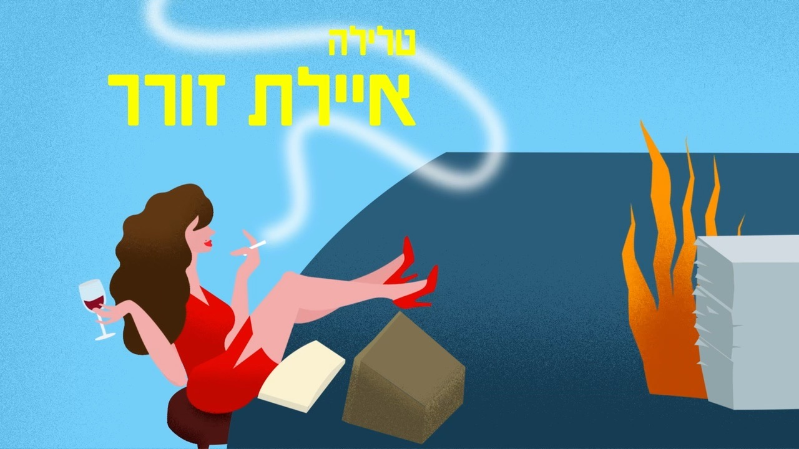
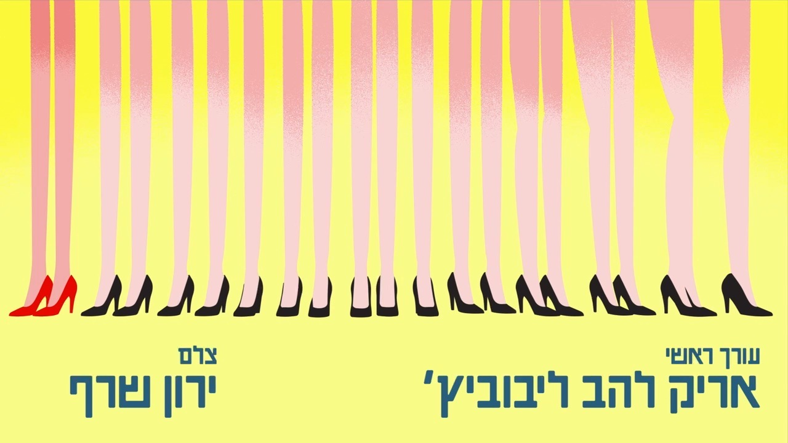
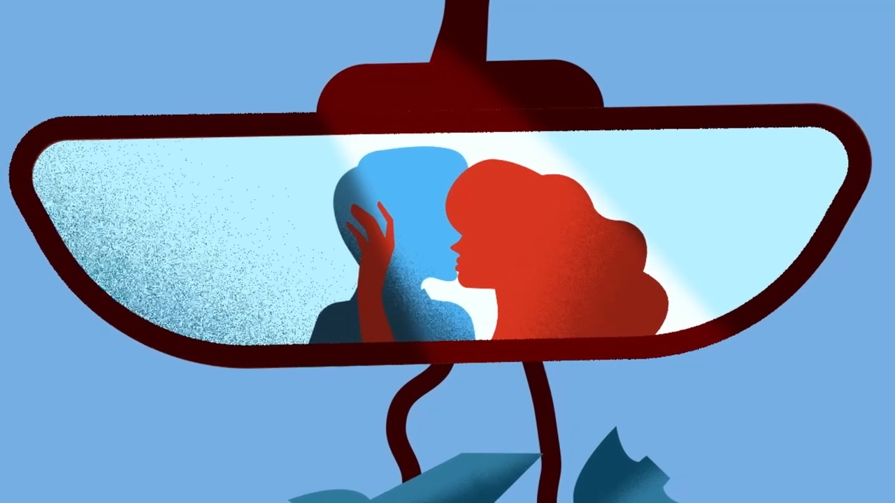

The Siren’s Song
- Year
- 2026
- Role
- Asset design & animation
- Tools
- Illustrator, After Effects, AI-assisted (Claude) for expressions
- Collaborator
- Galia Frid
The Idea
This is a title sequence for a series based on the book Siren’s Song (Shirat HaSirena) by Irit Linor, made for a Title Sequence course in my third year at Bezalel, together with Galia Frid. The challenge was translating a novel into a title sequence that could carry both the plot and the feeling of reading it. The book’s heroine, Talila, is neither frightened nor particularly moved by the Gulf War unfolding around her, so we built the sequence as a light love story, while planting hints of the war underneath it, a gas mask, air raid sirens, missiles, so that the contrast between her lightness and the world around her would come through.
Process
We began by pulling specific scenes straight out of the book: the advertising office, the dress with the open back, the race in the sea between Noa and Talila, the night drive, the window toward Dana. Alongside the scenes themselves, we catalogued the feelings the book gave us, romance, cynicism, and color, and used that catalogue as the basis for the visual language.
Early on we worked in a realistic, narrative way, building full compositions with walls, floors and roads, the office scene, for instance, had a grey, literal floor and windows. Once we realized that approach felt less interesting and the compositions weren’t coming together, we shifted to a more “floating” style: flat, saturated color fields with no walls or floor, untethered from a specific time or place. The same office scene became colorful, set against a flat blue background, with the figures themselves rendered as if on fire against it.
The color palette itself was chosen deliberately loose and vivid, to carry Talila’s lively worldview and the absurdity she sees in the war around her. The scenes we chose stayed close to her and to the way she chooses to enjoy the moment regardless of what’s happening outside. At the same time, we mapped out the objects associated with the war and chose precisely where to plant them, in a game called “hit the mouse” and in sirens on a rooftop, so the hints stayed present without taking over.
We split the technical work by strength: I built assets in Illustrator and animated them in After Effects, while Galia built assets using AI to match the style I’d created for the characters and environment, and we both used Claude to generate expressions. Choosing the music was the most tedious decision of the whole project; we settled on “Ani Arutz Elecha” by Sharon Roter for its playfulness, and Galia edited the sound so it matched the sequence’s length precisely.



What Was Cut
We considered using masking tape as a visual motif, since it’s mentioned often in the book, but ultimately dropped it. The sequence already felt visually rich enough without it.
The Result
The finished piece is a colorful, playful title sequence that carries the feelings of reading the book, and it was presented at the course’s final submission. The scene I’m proudest of is the one where legs are gradually added in, visually interesting on its own and carried by motion I really like.
What I’d Do Differently
I’d add more sound effects rather than relying on the song alone to carry the whole sequence.
Credits
Design & animation - Adel Fitoussi & Galia Frid
Bezalel, 2026